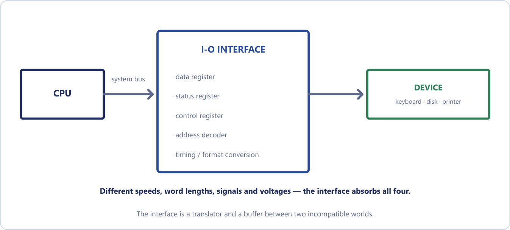
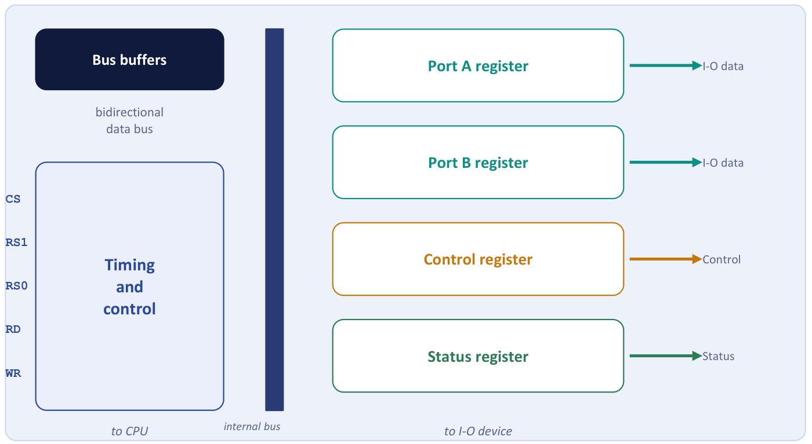
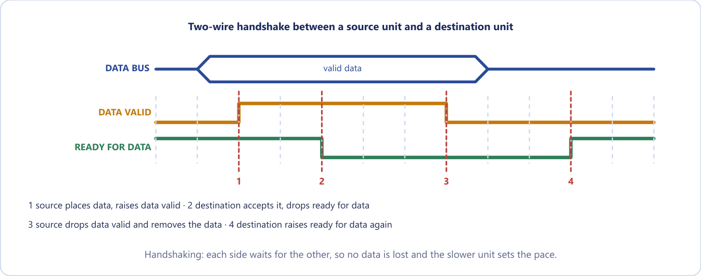
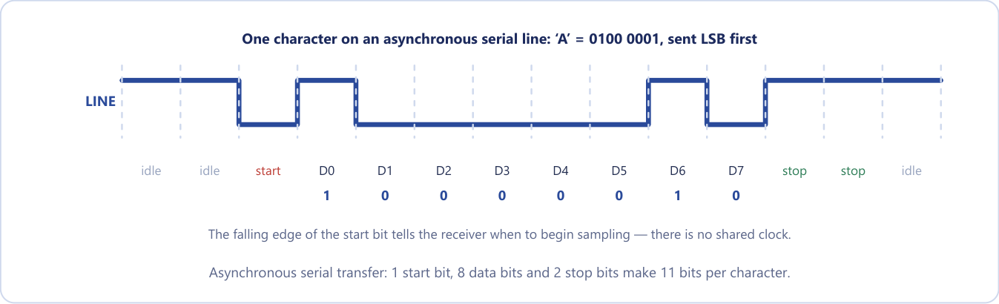
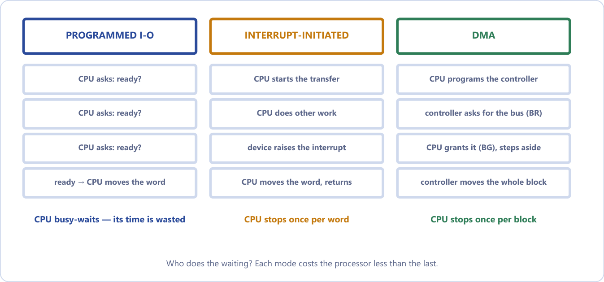
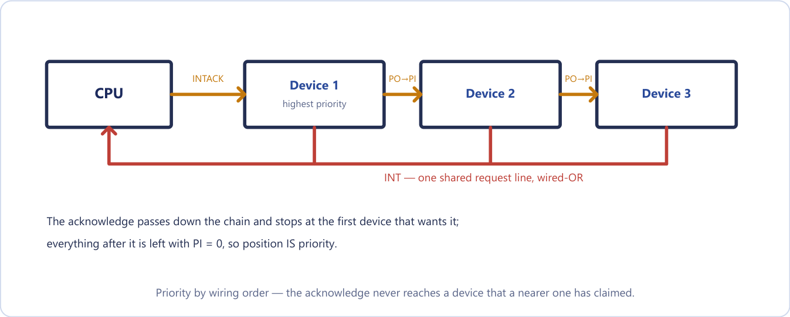
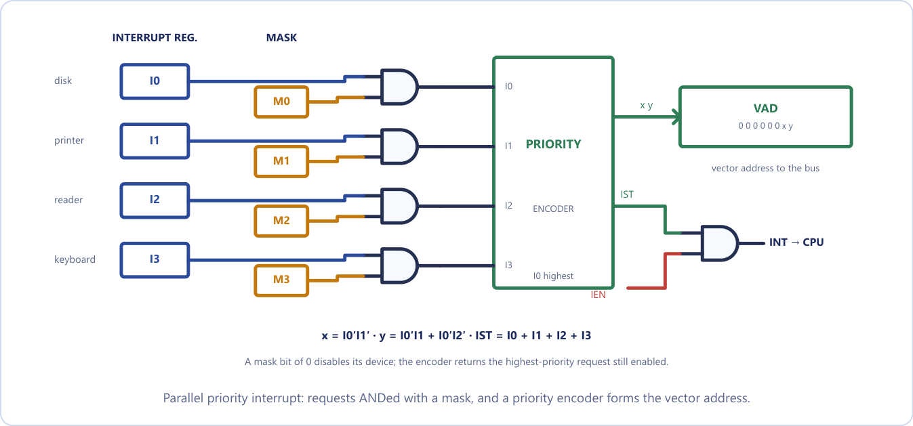
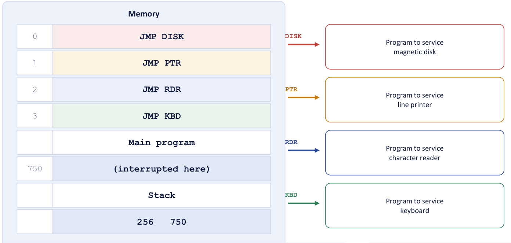

Chapter 20: Input-Output Interface and Modes of Transfer¶
How the processor talks to devices that are nothing like itself, and the three ways of moving a word to or from them
A processor and its memory are fast, electronic and parallel. The devices around them (a keyboard, a display, a printer, a disk) are slow, electromechanical, often serial, and each different from the next. They cannot be wired directly to the processor's buses. This chapter is about the machinery that bridges the gap: the input-output interface, the rules for addressing a device, the signals that let two units with unrelated clocks agree on when data is valid, and the three ways a program can move data once the connection exists.
Those three ways, programmed I/O, interrupt-initiated I/O and direct memory access, differ in exactly one respect: how much of the CPU's attention each transferred word costs. In programmed I/O the CPU does everything, including the waiting. With interrupts the CPU is freed from waiting but is still involved with every word. We study the first two in this chapter, together with the hardware that arbitrates between several interrupting devices, the priority interrupt. The third, DMA, takes the CPU out of the data path altogether and has a chapter of its own. The theme throughout is the one that opened this unit: never leave the processor waiting.
What you will learn
- Explain why an interface unit is needed, and describe its data, status and control registers and the I/O bus.
- Compare isolated (I/O-mapped) and memory-mapped I/O.
- Trace strobe and handshaking sequences, and say why handshaking is more reliable.
- Describe asynchronous serial transfer: start and stop bits, the baud rate and the UART, and compute character rates.
- Describe programmed I/O and compute the time it wastes.
- Explain interrupt-initiated I/O, vectored interrupts and the interrupt cycle.
- Resolve priorities with a daisy chain and with a parallel priority interrupt unit and mask register.
20.1 Why an interface is needed¶
Input-output interface provides a method for transferring information between internal storage (the CPU and memory) and external I/O devices. Peripherals need special communication links with the central computer because they differ from it in four ways.
- Signals. Peripherals are electromechanical or electromagnetic devices, while the CPU and memory are electronic, so a conversion of signal values is required.
- Speed. The data-transfer rate of peripherals is usually much slower than the CPU's, so a synchronisation mechanism is needed.
- Format. Data codes and formats in peripherals differ from the word format in the CPU and memory; a serial line delivers one bit at a time, whereas the CPU handles 32- or 64-bit words in parallel.
- Operating modes. Peripherals differ from each other, and each must be controlled so as not to disturb the others on the bus.

The interface is a translator and a buffer between two incompatible worlds (Figure 20.1). The CPU speaks in nanoseconds and parallel words; a printer speaks in milliseconds and mechanical motion. The interface holds data until the slow side is ready and converts formats and signal levels, rather as an interpreter both translates and lets each speaker talk at their own pace. A busy executive does not greet every visitor personally; a receptionist meets them, handles their format, holds a message until the executive is free, and signals "someone is waiting" on a status board. In the same way the interface offers the CPU a tidy set of registers through which to talk.
The I/O bus and the interface registers¶
All interfaces hang off a common I/O bus made of data lines, address lines and control lines. The processor places a device address on the address lines. The address decoder in exactly one interface recognises it, and that interface responds to the accompanying command on the control lines: read data, write data, read status, or issue a control function.
An interface unit contains four kinds of register, shown in Figure 20.2: data in, data out, orders in and news out.
- The port registers (port A and port B in the figure) hold the data going to or coming from the device. The data register is the buffer that lets the CPU leave data without being present at the instant the device is ready.
- The control register receives commands from the CPU: direction, mode, start.
- The status register reports conditions and errors, such as ready, busy and error. The flag bit that the CPU polls lives here.
Every I/O interface you will meet, whether a UART, a disk controller or a USB chip, is some elaboration of these four registers, together with address decoding and the timing and format-conversion logic.

Which register the CPU reaches is chosen by three inputs. The chip select (CS) is driven by an external decoder that recognises the addresses assigned to this interface; it is exactly the address decoding of Chapter 18. RS1 and RS0 are usually connected to the two least-significant address lines and choose one of the four registers. With CS = 0 the interface is not selected, and the data bus is in the high-impedance state.
| CS | RS1 | RS0 | Register selected |
|---|---|---|---|
| 0 | x | x | none: data bus in high impedance |
| 1 | 0 | 0 | port A register |
| 1 | 0 | 1 | port B register |
| 1 | 1 | 0 | control register |
| 1 | 1 | 1 | status register |
Table 20.1. Register selection in the interface unit.
Example 20.1: Number of device-address lines
Problem. An I/O bus must uniquely address up to 100 peripheral interfaces. How many address lines are required?
Solution. We need \(2^n \ge 100\). Since \(2^6 = 64 < 100\) and \(2^7 = 128 \ge 100\), \(n = 7\).
Answer. 7 address lines, giving up to 128 device addresses.
Example 20.2: Finding a register in the interface
Problem. An interface is assigned the four consecutive addresses 40 to 43 (hexadecimal), with RS1 and RS0 connected to address lines \(A_1\) and \(A_0\) and CS driven by a decoder that recognises the upper bits. At which address does the CPU find each register, and what does it read at 43?
Solution. Taking the register codes of Table 20.1: address 40 \(= 0100\,0000\) has \(A_1A_0 = 00\), so port A; 41 has \(A_1A_0 = 01\), port B; 42 has \(A_1A_0 = 10\), the control register; 43 has \(A_1A_0 = 11\), the status register. A read at 43 therefore returns the status, including the flag bit that says whether the device is ready.
Answer. Port A 40, port B 41, control 42, status 43.
20.2 Isolated and memory-mapped I/O¶
The CPU must be able to name a device register. There are two ways to do so, and the whole difference is one question: does a device address live in the same number space as a memory address?
Isolated (I/O-mapped) I/O. The interface addresses live in their own address space, isolated from the memory addresses. The CPU has distinct input and output instructions (IN and OUT) and separate I/O read and I/O write control lines. The same number, say 0F0, therefore means one thing on a memory read and a different thing on an I/O read, depending on which control line is enabled.
Memory-mapped I/O. One address space is shared by memory and I/O. There are no special I/O instructions at all: a segment of the address range is reserved for interface registers, and ordinary load and store instructions read and write them. Every memory-reference instruction is therefore also available for I/O.
Think of two houses on one street, or two streets. Memory-mapped I/O gives memory and devices house numbers on the same street: simple, but every number given to a device is one the memory can never use. Isolated I/O builds a second street with its own numbering, and a signpost (the control line) says which street you mean.
| Aspect | Isolated (I/O-mapped) | Memory-mapped |
|---|---|---|
| Address space | separate for memory and I/O | one shared space |
| Instructions | special IN / OUT instructions | ordinary load / store |
| Control lines | I/O read / I/O write, plus memory read / write | only memory read / write |
| Memory available | the full address range | reduced by whatever the devices take |
| Instruction variety | few, dedicated I/O instructions; limited operations | the full instruction set applies to I/O, including arithmetic on a device register |
| Used by | x86 (which has both) | ARM, RISC-V, most modern designs |
Table 20.2. Isolated and memory-mapped I/O.
The advantage of isolated I/O is that the whole memory address space stays available, and the instructions that touch hardware are easy to see in a program. Its disadvantages are that it needs extra instructions and control lines, and that only IN and OUT reach a device, so the CPU cannot do arithmetic or a comparison directly on a device register; every operation needs an explicit IN first and an OUT afterwards. For memory-mapped I/O the advantage is that the full instruction set works on devices; the disadvantage is that every address given to a device is one that memory can never use.
Memory-mapped does not mean stored in RAM
The address looks like a memory address, but it is routed by the address decoder to a device register, not to a RAM cell. Writing to it might make a printer print or a motor spin; reading it might return a live sensor status. That is also why a memory-mapped region must be marked non-cacheable: if the cache "helpfully" returned a stale copy instead of re-reading the live status register, the program would see the wrong device state, and a write might never reach the hardware.
Addressing is not timing
Isolated I/O is about how a device is addressed; interrupt-driven I/O is about how the transfer is timed. Any addressing scheme can be used with any transfer mode, and confusing the two loses marks.
20.3 Asynchronous data transfer¶
Two units designed independently have no common clock, so their internal timing is unrelated. An asynchronous transfer needs control signals that tell each unit when data is being transmitted. Two methods are used: strobe control and handshaking.
Strobe control¶
The simplest method is a single strobe pulse on one line. In a source-initiated transfer the source places data on the bus, waits for it to settle, and then pulses the strobe; the destination latches the data on the falling edge. In a destination-initiated transfer the destination pulses the strobe to say "send me data", and the source responds by placing the word on the bus and holding it long enough to be accepted.
Figure 20.3 shows both cases: in the first the strobe line runs in the same direction as the data, in the second it runs against it.
Strobe control has a fatal weakness: there is no acknowledgement. The source that pulses a strobe has no way of knowing whether the destination actually received the data, and a destination that strobes for data cannot tell whether the source placed any. It is like posting a letter and assuming it arrived: it usually works, and when it does not you never find out. That is acceptable between two units you designed together with known timing, but not between a CPU and an arbitrary peripheral. The fix is obvious: add a second control line running the other way, carrying the reply.
Handshaking¶
The handshake method introduces a second control signal that provides a reply to the unit that initiates the transfer. One line goes in the same direction as the data; the other goes back the other way. In the source-initiated handshake the lines are DATA VALID (source to destination) and DATA ACCEPTED (destination to source).
- The source places data on the bus and enables DATA VALID.
- The destination accepts the data and enables DATA ACCEPTED.
- The source disables DATA VALID and invalidates the data.
- The destination disables DATA ACCEPTED. The system is back in its initial state.
In the destination-initiated handshake the lines are READY FOR DATA (destination to source) and DATA VALID (source to destination).
- The destination, ready to accept data, enables READY FOR DATA.
- The source places data on the bus and enables DATA VALID.
- The destination accepts the data and disables READY FOR DATA.
- The source disables DATA VALID. The system is back in its initial state.
The two sequences are identical if you read READY FOR DATA as the complement of DATA ACCEPTED. The only real difference is which unit takes the initiative, and therefore which one holds the initial state. Figure 20.4 draws the timing of the first four steps: the data bus carries valid data between steps 1 and 3, DATA VALID rises at step 1 and falls at step 3, and the reply line (drawn as READY FOR DATA) falls at step 2 and rises again at step 4.

Handshaking is reliable because successful completion relies on active participation by both units. If one is faulty the transfer does not complete, and that failure is detectable by a timeout: a clock started when a unit enables its handshake signal raises an alarm if no reply arrives. It also permits arbitrary delays, because each side waits for the other, so the transfer runs at the speed of the slower unit automatically, with no configuration. A strobe offers neither benefit and cannot tell a slow receiver from a dead one. In short, the handshake is a conversation, not a shout: "Here is the data." "Got it." "Good, I'll stop sending." "Ready for the next." That is why every real bus protocol, from an old parallel port to USB, is a handshake of some kind.
| Strobe | Handshaking | |
|---|---|---|
| Control lines | one | two (request and acknowledge) |
| Confirmation | none (assumed) | yes |
| Failure detected | no | yes, by timeout |
| Speed matching | none | automatic: the slower unit sets the pace |
| Reliability | lower | higher |
Table 20.3. Strobe and handshaking.
20.4 Asynchronous serial transfer¶
In parallel transmission each bit of a message has its own path and the whole \(n\)-bit message is sent at once: fast, but it needs \(n\) conductors. In serial transmission the bits are sent one at a time over a single line: slower, but it needs only one pair of conductors, which is what makes long-distance links affordable.
In asynchronous serial transfer there is no shared clock, so each character is framed. The idle line rests at 1. A start bit, always 0, marks the beginning of a character; the receiver detects its falling edge and then samples each following bit in the middle of its bit time, at the agreed rate. The character bits follow, least significant bit first, optionally followed by a parity bit. Then one or two stop bits, always 1, return the line to idle so that the next start bit is detectable. Figure 20.5 shows the letter A, 0100 0001, sent in a frame of 1 start bit, 8 data bits and 2 stop bits.

The baud rate is the number of bits transmitted per second. The start and stop bits carry no information, so they cost line time: 8 data bits need 11 bits on the line, roughly 27 per cent pure framing overhead. That is the price of having no shared clock.
Example 20.3: Bit time and baud rate (Mano's example)
Problem. A terminal transmits 10 characters per second. Each character has 1 start bit, 8 data bits and 2 stop bits. Find the bit time and the baud rate.
Solution. Bits per character \(= 1 + 8 + 2 = 11\). Each character takes \(1/10\) s \(= 0.1\) s, so the bit time is \(0.1/11 = 9.09\) ms. The baud rate is \(10 \text{ characters/s} \times 11 \text{ bits} = 110\).
Answer. Bit time 9.09 ms; 110 baud.
Example 20.4: Characters per second at a given baud rate
Problem. (i) A terminal sends 8-bit characters with one start bit and two stop bits at 9600 baud. How many characters per second? (ii) A line sends 7-bit characters with one start, one parity and one stop bit at 19 200 baud. Find the character rate.
Solution. (i) Bits per character \(= 1 + 8 + 2 = 11\), so \(9600/11 = 872.7\) characters per second. (ii) Bits per character \(= 1 + 7 + 1 + 1 = 10\), so \(19\,200/10 = 1920\) characters per second.
Answer. (i) 872 characters per second. (ii) 1920 characters per second. Dividing by 8 is the common mistake: the start and stop bits also take line time.
The circuit that does all this is the asynchronous communication interface, or UART (universal asynchronous receiver-transmitter). It converts between parallel words and the serial frame, and its status register reports three errors: parity (a received parity bit disagrees), framing (a stop bit was not found where expected) and overrun (a new character arrived before the previous one was collected). A first-in first-out (FIFO) buffer between two units of different speed holds data until the slower unit can accept it.
20.5 The three modes of transfer¶
Data transfer to and from peripherals may be handled in one of three possible modes.
- Programmed I/O. The CPU executes a program that checks a flag and then moves each word through a CPU register. It waits in a loop while the device is not ready.
- Interrupt-initiated I/O. The device raises an interrupt request when it is ready. The CPU does other work until then, and services one word per interrupt.
- Direct memory access (DMA). A DMA controller moves a whole block straight between the device and memory. The CPU only sets it up and is told when it is done.
The question to ask of each is simply who does the waiting? Think of waiting for a delivery. Programmed I/O is standing at the window watching the road: you get nothing else done. Interrupt-initiated I/O is fitting a doorbell: you work until it rings, then take the parcel. DMA is giving the courier a key to the store room: one note on your desk when finished. Each mode costs the processor less than the last.

Figure 20.6 sets the three side by side: in programmed I/O the CPU busy-waits and its time is wasted; with interrupts it stops once per word; with DMA it stops once per block. The rest of this chapter takes the first two in turn. A full comparison table appears in the next chapter, once DMA has been described.
20.6 Programmed I/O¶
In programmed I/O the CPU executes an I/O instruction and then stays in a program loop until the interface's flag bit says the device is ready. Each item transferred requires the CPU to keep close tabs on the interface. The procedure for an input transfer is:
1. Read the interface status register.
2. Check the flag bit. If flag = 0, go back to step 1 (busy-wait).
3. If flag = 1, read the data register into a CPU register.
4. Transfer the data to memory.
5. Done? If not, go back to step 1. If yes, continue with the program.
This is the loop of the basic computer in Unit 4, written in its own instructions:
LOOP, SKI / skip the next instruction if FGI = 1
BUN LOOP / not ready: go round again
INP / ready: take the character
The busy-wait loop is the whole problem. While the flag is 0 the CPU does nothing but ask again and again; it is fully occupied and achieving nothing. Programmed I/O is useful only for small, low-speed systems, or where a device must be monitored continuously. In defence of the method, it needs no interrupt hardware at all and the code is three instructions: simplicity has a value, and when the device is fast and the wait short, or when there is nothing else to do, as in a small embedded system with one job, it is the right choice. Note that programmed I/O is not slow in the transfer itself, which is as fast as any other method. What it wastes is the CPU's time, which is a different criticism.
Example 20.5: How much time does polling waste? (Mano's numbers)
Problem. A computer can execute the two instructions that read the status register and check the flag in 1 µs. An input device transfers data at an average rate of 100 bytes per second. How many times does the CPU check the flag between two transfers?
Solution. 100 bytes per second is one byte every \(10\,000\) µs. Each check costs 1 µs, so the CPU checks the flag \(10\,000/1 = 10\,000\) times per byte transferred.
Answer. 10 000 checks per byte, 9999 of them useless. Mano's conclusion: the CPU is wasting time checking the flag instead of doing some other useful processing task. That sentence is the motivation for the next two modes.
Example 20.6: A faster device, a slower check
Problem. A device transfers 500 bytes per second and the CPU checks its flag in 2 µs. How many checks occur between two transfers under programmed I/O?
Solution. 500 bytes per second is one byte every \(1/500\) s \(= 2000\) µs. Each check takes 2 µs, so there are \(2000/2 = 1000\) checks per byte.
Answer. 1000 checks per byte, 999 of them wasted.
Example 20.7: The basic computer waiting for a keyboard
Problem. A CPU executes \(10^9\) instructions per second. A device delivers 10 characters per second, and the program waits in a two-instruction loop (test flag, branch back). (a) How many loop iterations are wasted per character? (b) Differentiate programmed from interrupt-initiated I/O.
Solution. (a) The time per character is 0.1 s, in which the CPU executes \(0.1 \times 10^9 = 10^8\) instructions. Each iteration is two instructions, so the loop runs \(10^8/2 = 5 \times 10^7\) times, all doing nothing.
(b) In programmed I/O the CPU keeps checking the status flag (polling), its time is wasted in busy-waiting, it needs no extra hardware, and it is acceptable only for very slow systems or dedicated controllers. In interrupt-initiated I/O the device informs the CPU by an interrupt when ready, the CPU does other work until interrupted, but it needs interrupt hardware and a service routine, and it is used by general-purpose systems.
Answer. (a) \(5 \times 10^7\) wasted iterations per character.
20.7 Interrupt-initiated I/O¶
Instead of the CPU monitoring the flag, the interface informs the computer when it is ready to transfer. While the CPU runs a program it does not check the flag at all; when the flag is set, the interface raises an interrupt request. The sequence is:
- The device becomes ready: the interface sets its flag and raises an interrupt request.
- The CPU finishes the current instruction. Interrupts are recognised only between instructions, so the machine state stays clean.
- The CPU saves the return address, pushing the PC (and often the status word) onto a stack.
- The CPU branches to the interrupt service routine (ISR), which performs the actual transfer for that one word.
- The routine returns: the saved address is popped back into PC and the interrupted program resumes exactly where it was.
In register-transfer terms the interrupt cycle does the following, after which the machine goes to fetch the next instruction:
SP ← SP − 1 decrement the stack pointer
M[SP] ← PC push the return address
INTACK ← 1 acknowledge the interrupt
PC ← VAD the vector address goes into PC
IEN ← 0 disable further interrupts
This is the same interrupt cycle, with IEN and the stack, that you met in the basic computer, reappearing here with priorities, vectors and a daisy chain to arbitrate between many devices.
There are two ways to find the service routine. In non-vectored interrupts the branch address is assigned to a fixed location in memory; every interrupt starts at the same place, and software works out who interrupted by polling. In vectored interrupts the interrupting source itself supplies the branch information, called the interrupt vector (or vector address, VAD). No polling is needed: the hardware goes straight to the right routine.
Compare this with programmed I/O. The CPU still handles every word, but it no longer waits for any of them. Between two keystrokes it runs your program instead of asking 10 000 times whether a key has been pressed.
Example 20.8: Polling against interrupts for a keyboard
Problem. A keyboard delivers 10 characters per second. The CPU executes a status-check pair in 1 µs, and an interrupt costs 50 µs of overhead. Compare the CPU time consumed per second by polling and by interrupts.
Solution. Polling. One character arrives every 100 000 µs, and the CPU checks continuously, so it makes 100 000 checks per character at 1 µs each: effectively 100 per cent of the CPU. Interrupts. Ten characters per second, each costing 50 µs: \(10 \times 50 = 500\) µs per second, which is \(0.05\%\) of one second.
Answer. Polling consumes the whole CPU; interrupts consume one part in 2000.
When is polling actually better?
When the device is fast and almost always ready. If a check costs 1 µs and the device delivers a word every 2 µs, an interrupt's 50 µs of save-and-restore overhead would be far more expensive than simply looking. That is why high-speed network drivers sometimes switch from interrupts to polling under heavy load, the very inversion of the argument above.
Interrupt-initiated I/O is not free. It removes the busy-waiting, but every single word still forces a full context switch into the ISR and back: saving registers, jumping, transferring one word, restoring, returning. For a slow keyboard that is fine. For a disk delivering thousands of words, thousands of switches into the ISR are themselves a heavy cost, which is what DMA fixes.
20.8 Priority interrupts¶
When several devices interrupt at the same time, the system must decide which to service first, and must make sure that a request from a device of lower priority cannot interrupt the service of a higher one. A priority interrupt system establishes a priority among the sources. Devices with high-speed transfers, such as magnetic disks, are given high priority; slow devices such as keyboards receive low priority. The reason is concrete: a disk delivers a word every few microseconds, and if a keyboard interrupt were serviced first and took longer than that gap, the disk's next word would arrive before the previous one was collected, and be lost. High-speed devices must pre-empt slow ones.
Priority can be established in software or in hardware.
- Software priority: polling. All interrupts branch to one common address, and the program tests each source in sequence; the order of testing is the priority order. The hardware is simple, but with many sources the time to poll them all can exceed the time available to service the device. A hospital doctor walking down the ward asking every patient in turn "is it you who called?" is thorough, but slow when the ward is large.
- Hardware priority interrupt unit. A hardware unit accepts requests from many sources, determines which has the highest priority, and issues a single interrupt request to the CPU. There is no polling: each source supplies its own vector address, so the CPU branches directly to the right routine. It is a triage nurse at the door, who already knows who is most urgent and sends the doctor straight there. Two arrangements exist: serial (the daisy chain) and parallel.
Daisy-chaining¶
In the daisy chain all devices that request interrupts are connected in a serial chain, sharing one interrupt request line to the CPU (a wired-OR). The device with the highest priority is placed first, nearest the CPU; lower-priority devices follow. Each device has a priority-in (PI) and a priority-out (PO) line, and the CPU's interrupt acknowledge enters the PI of device 1 and passes down the chain (Figure 20.7).

How the chain resolves priority:
- A device with PI = 1 that is not requesting passes the signal on (PO = 1).
- A device with PI = 1 that is requesting blocks it (PO = 0), places its own vector address (VAD) on the data bus, and is serviced.
- A device with PI = 0 knows that a higher-priority device has taken the acknowledge, so it puts PO = 0 and waits.
So the device with PI = 1 and PO = 0 is the one being served, and the farther from the CPU, the lower the priority. The acknowledgement is like a bucket handed down a line from the front: the first person who actually wants it keeps it, everyone before them passes it on, and everyone behind them never sees it. Priority is position: installing a device closer to the CPU raises its priority, with no change to any register. The advantages are very little hardware and no limit on the number of devices; the disadvantages are that priority is fixed by wiring, cannot be changed by software, and a far device can be starved.
Example 20.9: Reading a daisy chain
Problem. Four devices are daisy-chained in the order D1, D2, D3, D4 (D1 nearest the CPU). D2 and D4 both request an interrupt. Give the PI and PO of every device and say which is serviced.
Solution. The acknowledge enters D1 with PI = 1.
| Device | Requesting? | PI | PO | Serviced? |
|---|---|---|---|---|
| D1 | no | 1 | 1 | no: passes it on |
| D2 | yes | 1 | 0 | yes |
| D3 | no | 0 | 0 | no: never sees it |
| D4 | yes | 0 | 0 | no: must wait |
Answer. D2 is serviced. D4 stays pending on the shared line and is served at the next acknowledge cycle, after D2's routine returns. If D1 also requested, D1 would be serviced instead, since it is nearest the CPU and blocks the acknowledge.
A device with PI = 0 sets PO = 0, rather than passing the signal on, because PI = 0 means a higher-priority device has already taken the acknowledge; passing it on would let two devices respond at once. And the trap in daisy-chain questions is that priority depends only on position in the chain, never on a device's speed or importance.
Parallel priority interrupt¶
The parallel scheme replaces the chain with a register whose bits are set separately by each device (Figure 20.8). Priority is established by the position of the bits in the register. A mask register with the same number of bits can disable individual sources: each interrupt bit is ANDed with its mask bit, so a mask bit of 0 disables that device. The surviving requests go to a priority encoder, which produces the code of the highest-priority request that remains. That code forms part of the vector address, and the interrupt status output IST is ANDed with the interrupt-enable flip-flop IEN to interrupt the CPU, so that the program keeps an overall on/off switch over the whole interrupt system.

The encoder's behaviour is given by its truth table (Table 20.4). The entries marked d are don't-cares: if a higher-priority input is 1, the lower inputs make no difference. I0, the disk, always wins.
| \(I_0\) | \(I_1\) | \(I_2\) | \(I_3\) | \(x\) | \(y\) | IST | Meaning |
|---|---|---|---|---|---|---|---|
| 1 | d | d | d | 0 | 0 | 1 | \(I_0\) (highest) served |
| 0 | 1 | d | d | 0 | 1 | 1 | \(I_1\) served |
| 0 | 0 | 1 | d | 1 | 0 | 1 | \(I_2\) served |
| 0 | 0 | 0 | 1 | 1 | 1 | 1 | \(I_3\) served |
| 0 | 0 | 0 | 0 | d | d | 0 | no request |
Table 20.4. Priority encoder truth table.
The Boolean functions are
With the vector address \(000000xy\), the four devices get vectors 0, 1, 2 and 3, where a branch to the actual service routine is stored. IST is set whenever any unmasked interrupt is pending.
The mask register is what makes the parallel scheme more useful than the chain. It lets the program disable lower-priority interrupts while a high-priority device is being served, yet still allow a higher-priority device to interrupt the service routine. A daisy chain cannot do this, because its priority is fixed by wiring; in a parallel scheme the priority is programmable at run time, by writing the mask, at the cost of more hardware.
Example 20.10: Daisy chain against parallel priority
Problem. Four devices A, B, C, D are on a daisy chain in that order (A nearest the CPU). B and D request an interrupt at the same instant. Which is served first, and what happens to the other? Now put them on a parallel priority interrupt unit, with A on \(I_0\) through D on \(I_3\), and the mask bit of B cleared. Which is served, and what are \(x\), \(y\) and IST?
Solution. Daisy chain. INTACK reaches A, which is not requesting and passes it on (PO = 1). B has a request, so it sets PO = 0 and puts its vector on the bus. D sees PI = 0 and keeps its request pending on the shared line.
Parallel. The cleared mask bit disables B, so the encoder sees only \(I_3 = 1\) (with \(I_0 = I_1 = I_2 = 0\)). Then \(x = I_0'I_1' = 1\), \(y = I_0'I_1 + I_0'I_2' = 0 + 1 = 1\), and IST \(= 1\).
Answer. On the chain, B is served and D after B's routine returns. In the parallel scheme with B masked, D is served: \(xy = 11\), the vector address is 00000011, IST \(= 1\). With B unmasked in the parallel scheme, B would win again, with \(xy = 01\).
Interrupt service programs in memory¶
A priority interrupt system combines hardware and software. Each device has its own service program, reached through a JMP instruction stored at its assigned vector address (Figure 20.9).

Follow the example in the figure. The keyboard interrupts while the CPU is executing the instruction at address 749. At the end of that instruction the interrupt cycle stores the return address 750 on the stack, accepts vector 3 and puts it into PC. The JMP KBD at location 3 transfers control to the keyboard routine. If the disk, of higher priority, now interrupts at address 255 of that routine, address 256 is pushed and control goes to the disk routine. When it finishes, the return pops 256 and the keyboard routine continues; its own return then pops 750 and the main program resumes.
Every service routine follows the same pattern, and the order matters. The initial operations are: clear the lower-level mask bits (so that only higher priorities can interrupt), clear the interrupt status bit IST, save the processor registers, set IEN, and then proceed with the service routine. The final operations undo this in reverse: clear IEN, restore the registers, clear this source's interrupt bit, set the lower-level mask bits, and restore PC and set IEN. IEN is cleared first so that nothing can interrupt a half-restored machine.
20.9 Summary¶
Key points
- An interface resolves differences of signal, speed, data format and operating mode. It contains port (data), control and status registers and address decoding, and connects to the CPU through the I/O bus.
- Isolated I/O has its own address space, IN/OUT instructions and extra control lines; memory-mapped I/O shares the memory space and uses ordinary load and store, but gives up part of the address space. Memory-mapped regions must be non-cacheable.
- Strobe: one line, no acknowledgement. Handshaking: two lines, mutual confirmation, the slower unit sets the pace, failure detectable by timeout.
- Asynchronous serial transfer frames each character with a start bit (0), the data bits (LSB first) and one or two stop bits (1). Baud is bits per second; characters per second \(=\) baud \(/\) bits per character.
- Programmed I/O: the CPU polls a flag and moves every word, wasting its time in a busy-wait. Interrupt-initiated I/O: the device interrupts; the CPU does other work but handles one interrupt per word.
- Priority interrupts decide who is served first. Daisy chain: priority by position, PI/PO. Parallel: interrupt register, mask register and priority encoder, with \(x = I_0'I_1'\) and \(y = I_0'I_1 + I_0'I_2'\).
| Topic | Rule or figure |
|---|---|
| Interface registers | port A, port B, control, status (selected by CS, RS1, RS0) |
| Isolated I/O | separate space, IN/OUT, I/O read/write lines |
| Memory-mapped I/O | one space, load/store, reduces memory |
| Strobe vs handshake | 1 line, no reply vs 2 lines, acknowledged, timeout |
| Serial frame | 1 start (0) + data (LSB first) + [parity] + 1-2 stop (1) |
| Characters per second | baud / bits per frame |
| Polling cost | checks per word = time per word / time per check |
| Daisy chain | nearest the CPU wins; PI = 1, PO = 0 marks the device served |
| Priority encoder | \(x = I_0'I_1'\); \(y = I_0'I_1 + I_0'I_2'\); IST = \(I_0+I_1+I_2+I_3\) |
20.10 Exercises¶
Exercise 20.1. Why do computer systems require an I/O interface? Give any three reasons.
Answer
Each reason must name the mismatch it resolves. (1) Speed: peripherals are electromechanical and orders of magnitude slower than the CPU, so the interface buffers the data and raises a flag when it is ready. (2) Format: the CPU moves whole words in parallel while many devices work in bytes or in a serial bit stream, so the interface converts between them. (3) Signals and control: devices use their own control sequences and electrical levels, so the interface synchronises the two and presents the device as a small set of addressable registers. A fourth: it decodes addresses so many devices can share one bus.
Exercise 20.2. Name the registers inside an I/O interface unit and say what each is for.
Answer
Data (port) register: buffers the word going to or coming from the device. Status register: flags the CPU reads (ready, busy, error). Control register: commands the CPU writes (start, direction, mode). The unit also has an address decoder, so that it responds only to its own address, and timing and format-conversion logic.
Exercise 20.3. An I/O bus must uniquely address up to 100 peripheral interfaces. How many address lines are required?
Answer
\(2^6 = 64 < 100 \le 2^7 = 128\), so 7 address lines.
Exercise 20.4. Differentiate isolated I/O from memory-mapped I/O on address space, instructions and flexibility.
Answer
Address space: separate for memory and I/O against one shared space. Instructions: special IN and OUT against ordinary load and store. Flexibility: isolated I/O keeps the whole memory space but has few, limited I/O instructions; memory-mapped I/O lets the full instruction set work on devices but uses up part of the memory address space.
Exercise 20.5. In memory-mapped I/O, peripherals are accessed using: (a) special IN/OUT instructions (b) ordinary memory (load/store) instructions (c) interrupts only (d) the DMA controller.
Answer
(b). Device registers occupy ordinary memory addresses, so any memory instruction can act on them.
Exercise 20.6. What do you mean by isolated I/O? Write its advantage and disadvantage.
Answer
An organisation in which I/O ports have their own address space, entirely separate from memory addresses, with separate control lines and IN/OUT instructions. Advantage: the full memory address space stays available. Disadvantage: it needs extra instructions and control lines, and only IN and OUT can reach a device, so the CPU cannot operate on a device register directly.
Exercise 20.7. State one advantage and one disadvantage of memory-mapped I/O.
Answer
Advantage: ordinary load and store instructions work on devices, so the full instruction set is available for I/O. Disadvantage: every address given to a device is one that memory can never use.
Exercise 20.8. Asynchronous transfer using a single control pulse with no acknowledgement is called: (a) handshaking (b) strobe control (c) polling (d) arbitration. Why is handshaking preferred to it? Give two reasons.
Answer
(b) Strobe control. Handshaking is preferred because (1) it is reliable: the sender learns that the data was taken, so nothing is lost silently, and a timeout detects a transfer that does not complete; (2) it matches speeds automatically: each side waits for the other, so the transfer runs at the pace of the slower unit.
Exercise 20.9. Write the sequence of events of a source-initiated handshake.
Answer
(1) The source places data on the bus and enables DATA VALID. (2) The destination accepts the data and enables DATA ACCEPTED. (3) The source disables DATA VALID and invalidates the data. (4) The destination disables DATA ACCEPTED, returning to the initial state.
Exercise 20.10. A terminal sends 8-bit characters with one start bit and two stop bits at 9600 baud. How many characters per second can it send? What fraction of the bits is framing?
Answer
\(1 + 8 + 2 = 11\) bits per character, so \(9600/11 \approx 872\) characters per second. Three of the 11 bits (about 27 per cent) carry no information.
Exercise 20.11. A line sends 7-bit characters with one start bit, one parity bit and one stop bit at 19 200 baud. Find the character rate.
Answer
\(1 + 7 + 1 + 1 = 10\) bits per character, so \(19\,200/10 = 1920\) characters per second.
Exercise 20.12. A device transfers 500 bytes per second and the CPU checks its flag in 2 µs. How many checks occur between two transfers under programmed I/O, and what does it say about the method?
Answer
A byte arrives every 2000 µs and a check takes 2 µs, so 1000 checks per byte, 999 of them wasted. The CPU is fully occupied and achieving nothing, which is the main drawback of programmed I/O.
Exercise 20.13. The main drawback of programmed I/O is: (a) it needs a DMA controller (b) the CPU busy-waits and wastes cycles (c) it cannot detect errors (d) it requires two control signals. Why is it unsuitable for high-speed devices?
Answer
(b). With a high-speed device the CPU would have to poll continuously and move every word itself, so the transfer rate would be limited by the CPU and the CPU could do nothing else.
Exercise 20.14. Differentiate programmed I/O from interrupt-initiated I/O.
Answer
Who detects readiness: the CPU, by polling, against the device, by an interrupt. CPU during the wait: busy-waiting against executing other programs. Hardware: only a status flag against an interrupt line, priority logic and vectors. Overhead: the polling loop against one context switch per word. In programmed I/O the CPU asks; in interrupt-initiated I/O the device tells. Both still move each word through the CPU, which is what DMA changes.
Exercise 20.15. Four devices are daisy-chained in the order A, B, C, D, with A nearest the CPU. If C and D both request, which is served? What would change if D were moved between A and B?
Answer
C is served, since it is nearer the CPU and blocks the acknowledge; D waits. If D were placed between A and B, D would be nearer the CPU than C and would be served first. Priority depends only on position, and no register changes.
Exercise 20.16. Explain daisy-chain priority and give one advantage and one disadvantage.
Answer
Devices are connected in series; the acknowledge passes from one to the next and is absorbed by the first device that is requesting service, so position on the chain is priority. Advantage: very simple and cheap: one shared interrupt line and a chained acknowledge. Disadvantage: the priority is fixed by wiring and cannot be changed by software, and the acknowledge takes longer to propagate the further down the chain it travels.
Exercise 20.17. What is a mask register and why is it useful? Using Table 20.4, find \(x\), \(y\) and IST when only \(I_1\) and \(I_2\) are requesting (unmasked).
Answer
A register with one bit per device, ANDed with the interrupt register before the priority encoder; a 0 disables that device's interrupt. It lets software silence individual devices rather than all of them, so a critical routine can shut out low-priority sources while still responding to a clock or an error. With \(I_0 = 0\), \(I_1 = 1\), \(I_2 = 1\): \(x = I_0'I_1' = 0\), \(y = I_0'I_1 + I_0'I_2' = 1\), IST \(= 1\), so \(xy = 01\) and \(I_1\) is served.
Exercise 20.18. A keyboard interrupts while the CPU is executing the instruction at address 749, and the disk interrupts at address 255 of the keyboard routine. What is on the stack at the deepest point, and in what order are the routines resumed?
Answer
The stack holds 750 (pushed first, for the main program) and 256 (pushed second, for the keyboard routine). When the disk routine returns it pops 256 and the keyboard routine continues; its return pops 750 and the main program resumes.
Exercise 20.19. Why must a memory-mapped device status register be marked non-cacheable? (a) Caching could return a stale value instead of the live device status (b) the register is always read-only (c) DMA cannot reach cached data (d) it saves address-bus lines.
Answer
(a). The value can change on its own and writes must reach the device; a cached copy would be stale or would never reach the hardware.
Exercise 20.20. Self-test. (a) Give three differences between isolated and memory-mapped I/O. (b) Why is handshaking more reliable than a strobe, and what mechanism detects a failed transfer? (c) A keyboard delivers 10 characters per second; a status check takes 1 µs and an interrupt costs 50 µs. Compare the CPU time per second under polling and interrupts.
Answer
(a) Isolated: separate address space, special IN/OUT instructions, extra I/O read/write control lines. Memory-mapped: one shared space, ordinary load/store, no special instructions, but I/O addresses reduce the memory available. (b) A strobe gives no acknowledgement, so the sender never learns whether the data arrived; handshaking requires active participation by both units, and a timeout detects a transfer that does not complete in a set period. (c) Polling occupies essentially 100 per cent of the CPU; interrupts take \(10 \times 50 = 500\) µs per second, 0.05 per cent.